Open shelter: nearby trees are not room walls


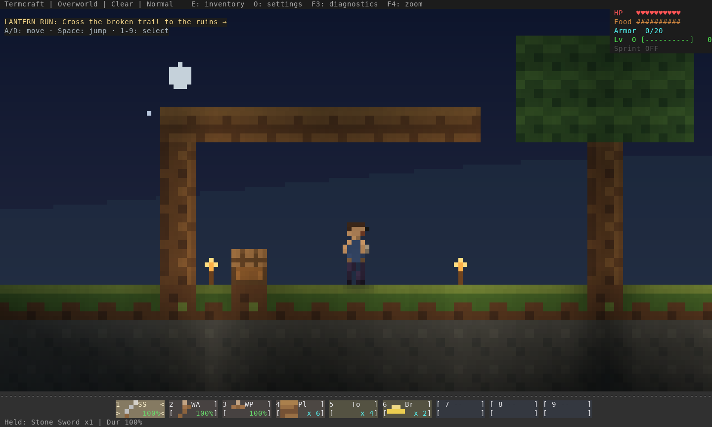
Actual color ANSI output, software rasterized. Before/after room fixtures share geometry and player poses. The flight scene stages impulses and advances the real engine; the native trial captures come from a terminal process controlled through actual input. These checks do not measure human enjoyment or real WAN feel. Review and reproduction.
Run ./termcraft trial to try the current candidate. Click a frame for full-size inspection.
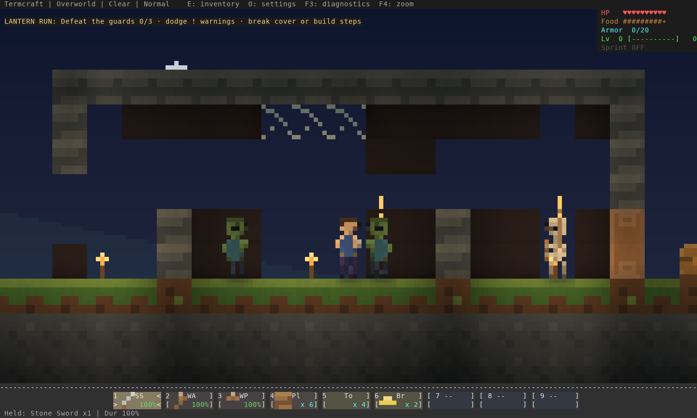
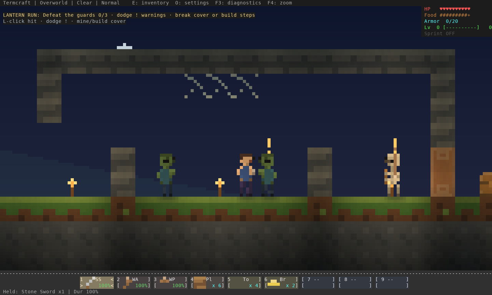


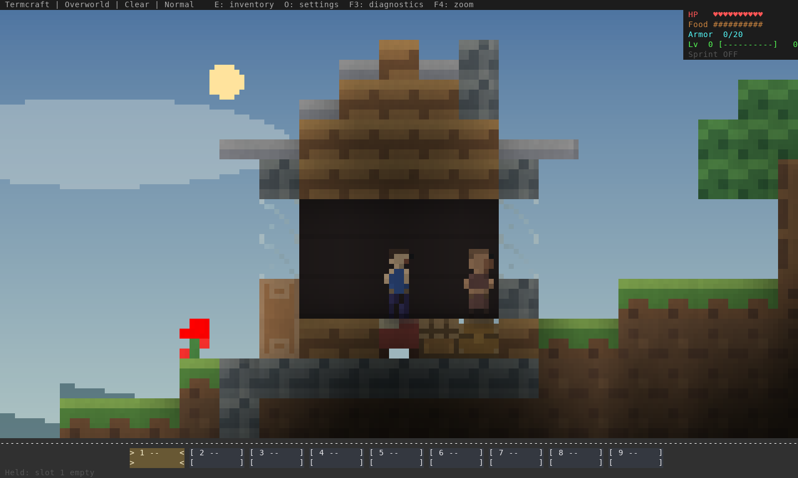
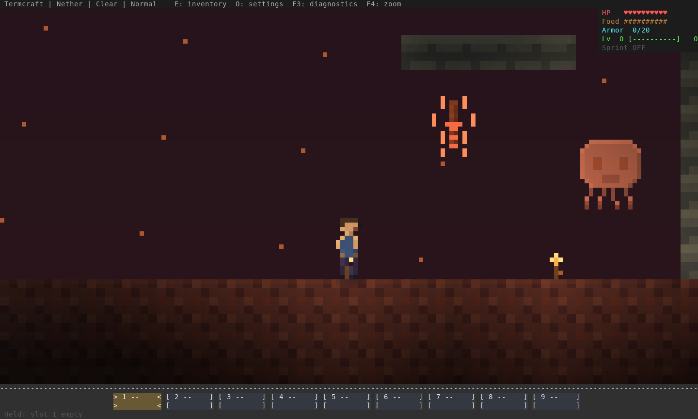
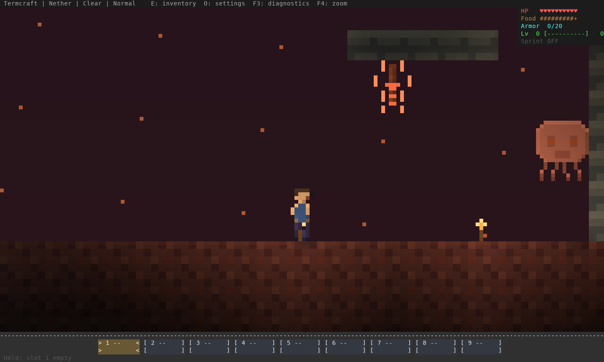
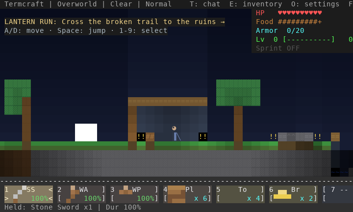
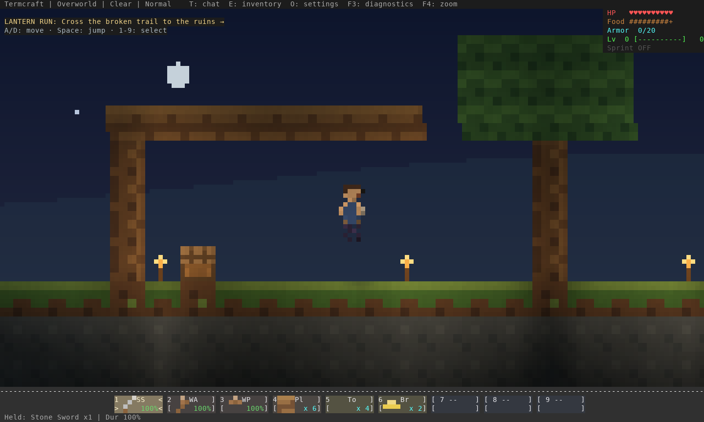
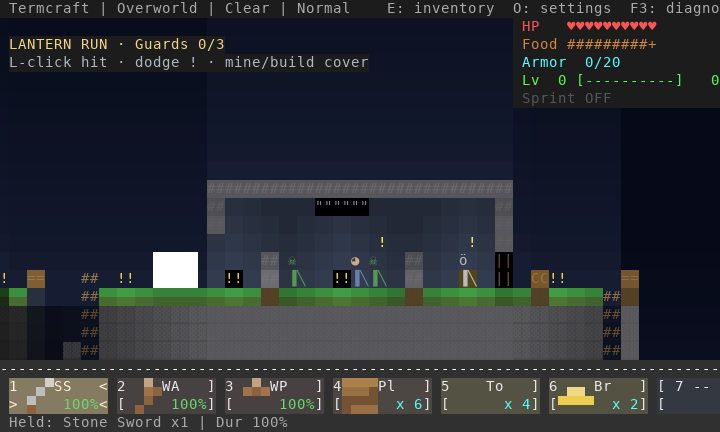
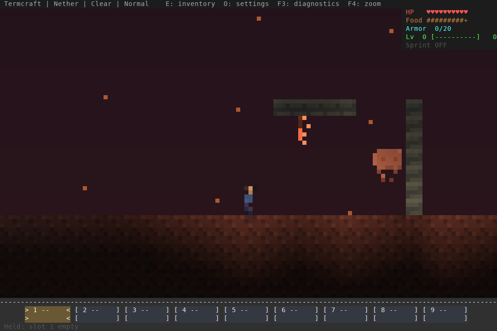
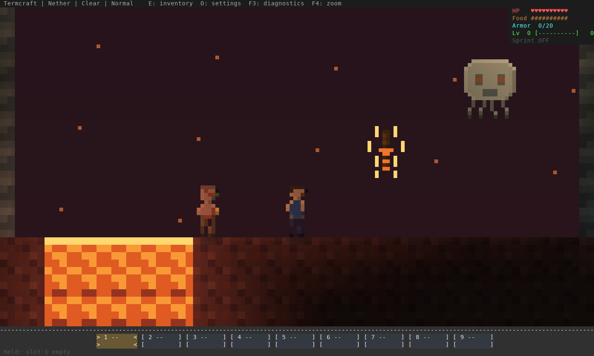
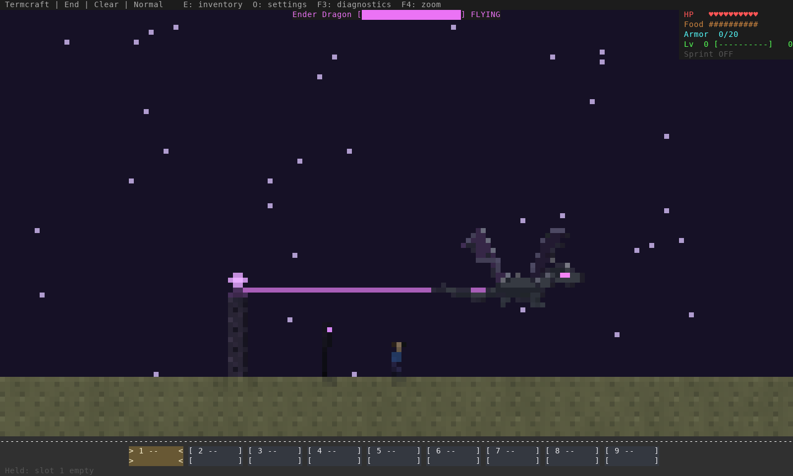